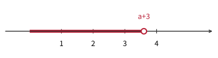

ホーム ＞ 数学I ＞ 1次不等式
不等式 \(2x-3<x+a\) をみたす正の整数 \(x\) が、ちょうど3個であるとき、定数 \(a\) の値の範囲を求めよ。
まず不等式を \(x<\ \ \) の形に解く。次に、正の整数 1, 2, 3 は入り、4 は入らないように、右端の位置を数直線上で決める。等号が入るかどうかを端点ごとに確かめるのがコツ。
\(x\) の項を左辺に集める。
解は \(x<a+3\)。正の整数のうち 1, 2, 3 が入り、4 が入らない（図）。

\(x<a+3\) に \(x=3\) が入る → \(3<a+3\)。等号なし（右端 \(a+3\) は含まれないため、\(3=a+3\) だと3は入らない）。
\(4\) が入らない → \(4\geqq a+3\)。等号あり（\(4=a+3\) のとき \(x<4\) で、4は入らない）。
\(a>0\) かつ \(a\leqq1\)。
【答案（テストに書く形）】
答